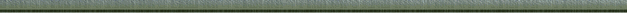

|  | |||||||||||||||||||||||||||||||||||||||||||||||||||||||||||||||||||||||||||||||||||||||||||||||||||||||||||||||||||||||||||||||||||||||||||||||||||||||||||||||||||||||||||||||||||||||||||||||||||||
|
Потребителско ръководство за WaveScout 4D
1. Интродукция 1.1. Какво представлява WaveScout 4D? Този софтуер представлява мощен инструмент за изчертаване и анализиране на четириизмерни математически функции. За разлика от общопознатите ни двуизмерни функции с един аргумент, като y=f(x), чрез тази програма могат да се изчертават графики на функции дори и с три аргумента y=f(x,z,t). Потребителя просто трябва да въведе конкретната функция като алгебричен израз съдържащ горните променливи и програмата веднага ще я визуализира. В общия случай резултатът ще представлява нагъната повърхност (нагъването зависи от променливите x и z), а ако израза съдържа и времето като променлива, тогава релефа на тази повърхност ще се изменя постоянно спрямо времевата функция. Потребителя разполага с пълна свобода при навигацията в триизмерното пространство, разглеждането и промяната на параметрите. Начало 1.2. За кого е предназначен WaveScout 4D? Приложението на тази програма е много широко. Потребителите биха я използвали както за визуализиране на математически и физични зависимости, така и за създаване на визуално атрактивни ефекти. Също така, програмата е подходяща за прожектиране на голям екран пред публика. Начало 1.3. С какво се отличава WaveScout 4D? Съществуват много математически програми за анализиране и визуализиране на математически функции, но много малко от тях предлагат подобна интерактивност, свобода, красота и удоволствие при работа. WaveScout 4D предлага един нов и завладяващ поглед върху математиката. WaveScout 4D неминуемо ще се развива в бъдеще, като обогатява функционалността си. Начало 1.4. Системни изисквания Минимални хардуерни изисквания: Pentium 200 MMX, 32 MB RAM, 8 MB видео памет; Оптимални хардуерни изисквания: Pentium 3 @1GHz или еквивалентен, 128 MB RAM, 64 MB видео памет (препоръчително ATI или Nvidia) Изисквания към Операционната система: Програмата е междуплатформена, може да се компилира както под Windows, така и под Linux. Начало 1.5. Лиценз Програмата и нейния код се предоставят в рамките на GPL лиценза. Повече информация за него може да намерите на http://www.gnu.org/copyleft/gpl.html. Начало 2. Възможности 2.1. Алгебрични изрази 2.1.1. Поддържани оператори Операторите, които могат да присъстват във вашите алгебрични изрази са следните:
Начало 2.1.2. Поддържани константи Поддържаните предефинирани константи са e и pi, със стойности съответно 2.718282 и 3.141592 . Начало 2.1.3. Поддържани функции WaveScout 4D разполага с богат набор от математически функции, които можете да използвате във вашите изрази - предоставени са почти всички познати математически функции. Всъщност, едва ли има математическа функция, за която да се сетите че отсъства от следващия списък. Единствената препоръка е да се съобразявате с допустимия интервал на аргументите. Основните групи функции, които присъстват са: експоненциални, логаритмични, тригонометрични и обратно тригонометрични:
Начало 2.1.4. Примери Сега, след като разбрахте за поддържаните оператори, функции и константи се надявам, че с лекота ще образувате Вашите изрази. Няма ограничение в броя на операторите, функциите или операндите в един израз. Променливите, които можете да използвате са x, z и t. Като начало изпробвайте: ((x+cos(x*atan(z-sin(x+t))))^2+(z+cos(sin(z)*x/12-t))^2)/20 или .4*cos(2*hypot(x,z)+t)+log(sin(x-t)+3,cos(z+t)+3)+cos(x*z)/5 Начало 2.2. Клавиши за навигация WaveScout 4D предлага много бърза и удобна навигация в триизмерното пространство. Тя се осъществява чрез няколко клавиша и мишката:
Движението на мишката предизвиква ротация на камерата, така че нейната позиция остава постоянна. Възможно е да се пусне и така наречения "passive motion". По този начин няма да е нужно да задържате клавиша на мишката за да завъртите изгледа, а само ще трябва да движите мишката. Начало 2.3. Главни Менюта 2.3.1. Function Менюто "Function" предоставя текстово поле, където потребителя трябва да въведе желаната функция. По-надолу се предоставя възможността за промяна на интервала на променливите x и z. Чрез натискане на бутонът "Display Max/Min Values" потребителя може да наблюдава максималната и минималната стойност на функцията във всеки един момент от времето. Начало 2.3.2. Time Оттук може да се наблюдава и контролира самата числена стойност на времето, а също така и да се забързва/забавя неговото течение. В най-горното поле се показва текущата стойност на времето. Под него се намират три бутона, чрез които контрола на времето става изключително лесен. Първият от тях, "Stop/Resume" позволява спирането на течението на времето в определен момент. Така е възможно спокойно да разгледаме фунцкията в определен момент от времето, без тя да се изменя. Вторият бутон, "Reset" занулява стойността на времето, а третият - "Reverse" обръща посоката на времето. Най-отдолу се намира полето "Time incrementional ratio", откъдето може да се забързва/забавя течението. Начало 2.3.3. Camera Освен специалните клавиши за навигация, WaveScout 4D предоставя и други способи за манипулация на камерата в триизмерното пространство. Менюто "Camera" предоставя възможност за пасивна ротация на камерата. Тази ротация може да бъде два типа: около центъра на камерата или около позицията на камерата. Скоростта и посоката на въртене също могат да се променят. Възможно е да се наблюдават и директно да се нагласят двата параметъра на камерата: нейната позиция и нейния център. Начало 2.3.4. Surface Оттук се нагласят опциите, свързани със самото изобразяване на повърхността. Възможно е да се намалява/увеличава броят на полигоните изграждащи повърхността, а също така да се променя и режима на рендиране:
Чрез F1 и F2 може да се намалява/увеличава резолюцията на повърхността. Начало 2.3.5. Coloring Като програма с богат набор от възможности, с WaveScout 4D е възможно дори да приложите оцветяваща повърхнината функция. Тази функция отново може да има до три аргумента и като синтаксис не се различава по нищо от функцията на повърхнината. За всеки един от цветовите компоненти (Red, Green, Blue) може да се зададе функция. Когато някоя от тези функции е подобна или сходна на функцията на повърхнината, тогава се получава така нареченото "височинно оцветяване", т.е. на определена височина съответства определен цвят. Независимо от това, оцветяващите функции може да се зададат съвсем различно от функцията на повърхнината. А ако искате повърхнината да бъде в постоянен цвят, просто задайте константни стойности на оцветяващите функции.
Начало 2.3.6. Misc Това меню предлага възможности като показване/скриване на ориентировъчните оси, променяне на техния размер. Също така, оттук може да се показва/скрива ограничаващата кутия на повърхността. Интересна опция е промяната на 3D проекцията. Има два режима: Perspective и Ortho. Първият режим е обичаен, при него обектите изглеждат по-малки на по-голяма далечина. Но при Ortho режимът големината на обектите е постоянна, независимо от далечината. Този режим е подходящ когато искаме да видим точния профил на функцията, без пространствена деформация.
Начало 3. Screenshots
Начало 4. Интересни неща, които да пробвате Съществуват милиони интересни функции, които можете да визуализирате чрез WaveScout 4D. Навярно всички знаем за параболата и квадратната функция. Да, но всички си представят параболата в двуизмерното пространство. Сега ще визуализираме квадратна функция с два аргумента, при което резултатът ще бъде триизмерна парабола. Отидете в менюто "Function" и въведете функцията x^2+z^2. Натиснете "Plot". Огледайте интересната графика, която се получи. Сега натиснете десен бутон и отидете на Camera->Set View->Bottom. Какво мислите че виждате? Това всъщност е върха на параболата, погледната отдолу. Сега използвайте Zoom-In опцията чрез клавиша PageUp и се приближавайте постепенно. Но WaveScout 4D предлага и четвъртото измерение - времето. Представете си, че искате върха на параболата да се движи периодично. В такъв случай допълнете функцията до: (x-sin(t))^2+(z+cos(t))^2 Друга интересна функция е cos(hypot(x,z)). Въведете я и натиснете "Plot". Резултатът може би е вълниста повърхност с радиално разпределение. В случай, че искате да намалите периода на вълната, просто променете функцията до: cos(2*hypot(x,z)) А представяте ли си водна повърхност, в която хвърляте малък камък? cos(2*hypot(x,z)-t)*.5 Опитайте се да приложите и интересна оцветяваща функция върху тези повърхности. Начало 5. Основните програмни модули 5.1. vector2 и vector3 Тези два модула предоставят лесен програмен интерфейс за работа със съответно двуизмерни и триизмерни вектори. Основните типове са съответно vector2_t и vector3_t. Използвайки тези типове, има функции които събират, изваждат и манипулират по различни начини вектори. Начало 5.2. camera Тук се дефинира типът camera_t, който съдържа три вектора описващи положението на камерата. Всички функции от този модул приемат като първи аргумент инстанция на камера и я манипулират по определен начин (завъртане, придвижване и т.н.). Тук се използва доста математика и тригонометрия при ротацията на камерата. Начало 5.3. infix_tokenizer Тук всъщност става разделянето на алгебричния израз на съставящите го части "tokens". Има и функция която превръща разцепения на части низ във постфикс форма. Начало 5.4. postfix_eval След като алгебричният низ е разцепен и конвертиран в постфикс форма, неговата стойност вече може да бъде изчислена. Тук се намира и критичната функция postfix_eval, която се извиква за всяка точка от повърхността, във всеки един момент от времето. Начало 5.5. phpstring Предоставя функции за бързо и лесно манипулиране на низове, близки до тези в езика PHP. Начало 5.6. inpbuffer Тук се дефинира структурата inpbuffer_t, която съдържа статуса и информацията за текущо използваните входни устройства. Например inpbuf.mouse.x съдържа текущата x-координата на мишката. Начало 5.7. button Тъй като интерфейса на програмата е създаден от най-ниско ниво, този модул съдържа функция за изобразяването и проверката на статуса на бутоните. Начало 5.8. textbox Съдържа функцията която изобразява и обработва входа в текстовите полета. Начало 5.9. main Този модул обединява всички останали. Тук се създават подпрозорците, изгражда се интерфейса и т.н. Начало Потребителско ръководство за WaveScout 4D. За контакти и въпроси <hitman@bootbox.net> |
|||||||||||||||||||||||||||||||||||||||||||||||||||||||||||||||||||||||||||||||||||||||||||||||||||||||||||||||||||||||||||||||||||||||||||||||||||||||||||||||||||||||||||||||||||||||||||||||||||||